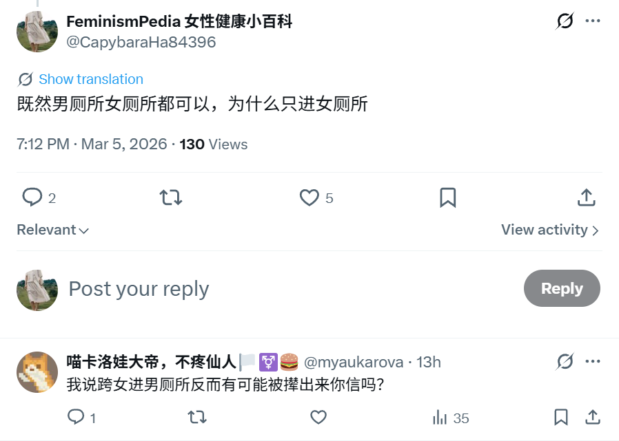

時璃風医詩🌈🏳️🌈
@hagishigure
这个解决方法是巴特勒发明的，你有本事去和巴特勒辩经去。🥴
生成-女性是德勒兹发明的，你去批斗德勒兹去。🥴
连预设女性是男性的可成为的附属他者这点都落入了伊利加雷和斯皮瓦克批判的男权的点你来装什么女权呢，蝻权驴罢了。🥴

FeminismPedia 女性健康小百科
@CapybaraHa84396
跨子可以进男/女厕所，为什么只进女厕所？
因为进男厕所会被蝻人打
有点懂了这个逻辑：在蝻权社会里，某个蝻性因为被同性校园暴力，然后某一天他发明了解决办法：做女的，这样就不会被打，并且所有人不能歧视他。
啊 是这样吗？ https://t.co/xfXGpauhjv